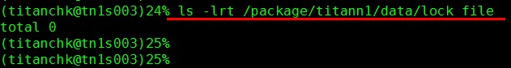
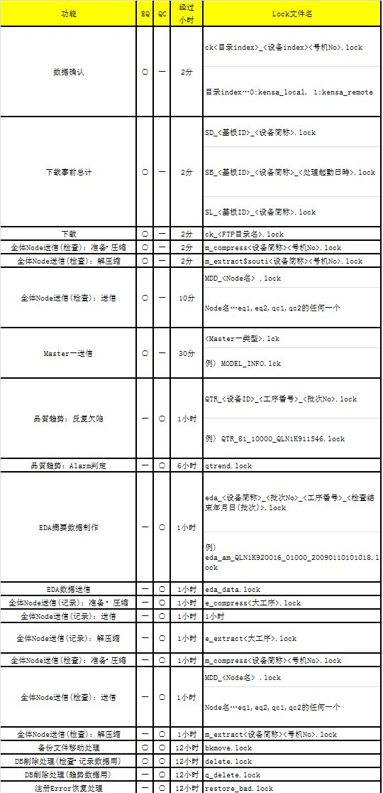

Lock文件残留情况确认
该命令用来确认 TITAN 运行时主要进程中创建的 Lock 文件的残留情况。
Lock 文件是用于防止重复启动进程的文件，该文件一直存在于 TITAN 各进程运行时。该文件本应当随进程结束而自动被删除，但当 TITAN 中出现任何异常时，将在程序中仅保留 Lock 文件。
一旦出现Lock文件剩余的情形，将意味着该功能一直处于停止状态，必须手动消除

未发现Lock文件时（正常情况），将显示「total 0」信息。
出现 Lock 文件时，会显示Lock文件名和文件创建时间。
通过确认 Lock 文件的保留时间从而判断是否将其看成文件残留状态。在目标 nod e中，通过执行 date 命令从而确认当前时间。
因功能不同，各进程的运行时间也不一致。因此，作为残留状态判定的时间段也因各功能中的 Lock 文件名不同而有所变化。
对照表
在找到的 Lock 文件中，根据以下列表要求进行确认（超过对应表中经过时间并且还能找到 Lock 文件时，将该 Lock 文件判定为残留状态）：
